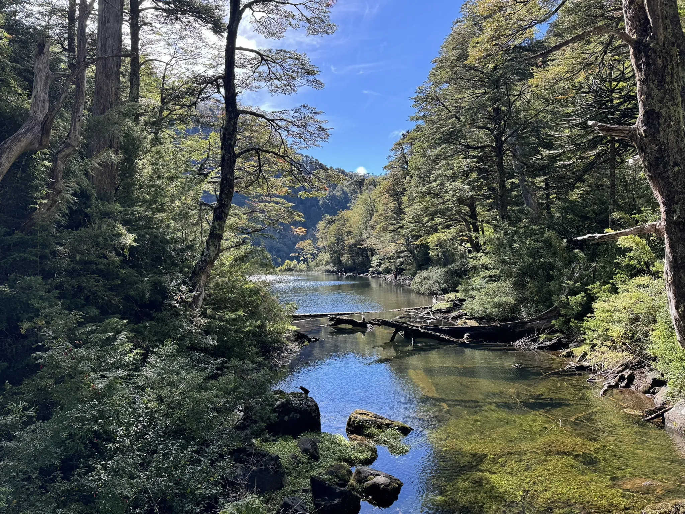

Sendero del Bosque Nativo
Una caminata amable entre árboles y sonidos del bosque.
Ver rutasRutas para respirar, explorar y cuidar
Encuentra senderos, paisajes y experiencias al aire libre en La Araucanía.
Explorar rutas
Consulta las condiciones antes de planificar tu salida. No reemplaza avisos oficiales de seguridad.
Datos: Open-Meteo. Referencia urbana de Temuco; las condiciones de montaña pueden variar.